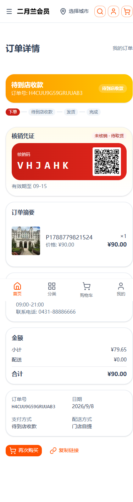

提交：ba08929（nshop） · 状态：已部署生产 www.youshop.cn
到店/货到付款（COD）自提单下单后，订单仅进入 PaymentAuthorized（支付“已授权”）、数据库 collected=null（未确认收款）、redeemClaimed=false（未核销）。此前订单详情页进度条把「支付」环节标为已完成（高亮），误导用户以为已支付。
扫码核销并确认收款（collected=true，台账 PENDING_SIGN→PAID）后才算「支付完成」；在此之前，COD 自提单的支付环节一律显示「待到店收款」。
| 文件 | 说明 |
|---|---|
utils/order-state.ts | 新增 isCodCollectPending(order)；progressIndex/stateBadge 在 COD 未收款时支付进度降为「待收款」。 |
components/order/OrderProgress.vue | 支持传 order；COD 未收款时支付格文案显示「待到店收款」且不高亮。 |
components/order/OrderStatusBanner.vue | COD 未收款时状态横幅显示「待到店收款」（警告色）。 |
components/order/OrderDetailClassic.vueOrderDetailProgressBlock.vue | 把 order 透传给 OrderProgress。 |
生产 https://www.youshop.cn，t2 租户（/t2），手机视口 390×844，账号：t2verify_1788855362957@test.com，订单：H4CUU9G59GRUUAB3（自提单 · cod-payment-template · PaymentAuthorized · 未收款 · 未核销）。
| 展示位置 | 修复前 | 修复后 |
|---|---|---|
| 顶部状态横幅 | 待发货 | 待到店收款（警告色） |
| 进度条第 2 格 | 支付（高亮为已完成） | 待到店收款 |
| 支付方式行 | 待到店收款（原本已对） | 待到店收款 |
| 核销凭证 | — | 未核销 · 待取货 |

图中黄色横幅、进度条第 2 格、支付方式行均为「待到店收款」，全程无「支付完成/已支付」。
通过：订单详情页对 COD 到店支付自提单，在下单后（未核销、未收款）正确显示「待到店收款」，不再把支付环节标为完成；待扫码核销并确认收款后，订单自动推进至 Delivered/Completed，进度条随之显示完成。